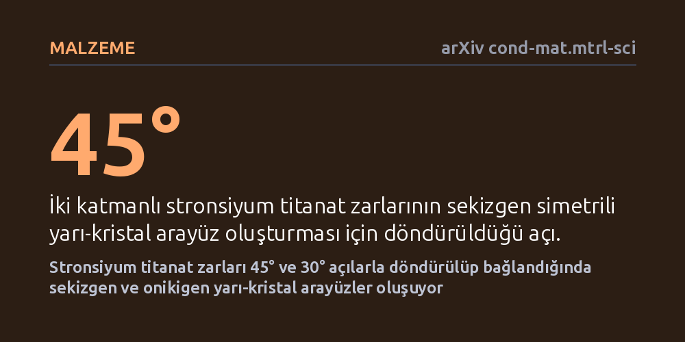

MALZEME · arXiv cond-mat.mtrl-sci · 2026-10-09
Araştırmacılar, karmaşık oksit malzemelerde öteleme simetrisi olmadan uzun menzilli düzen sağlayan yarı-kristal arayüzlerin üretilebilirliğini inceledi. Stronsiyum titanat zarlarının 45 ve 30 derece döndürülerek yapıştırılmasıyla sekizgen ve onikigen simetrili, kararlı yarı-kristal arayüzler oluşturuldu.
Atomik katmanları belirli açılarla döndürerek bağlamak, doğada kendiliğinden oluşmayan yeni elektronik ve optik özelliklere sahip hibrit oksit arayüzleri tasarlamanın yolunu açıyor.

Geleneksel malzeme biliminde kristaller, bir duvarın tuğlaları gibi kendini düzenli aralıklarla tekrarlayan atom bloklarından oluşur. Bu tekrara öteleme periyodu denir. Ancak doğada atomları belirli bir kurala göre dizilen fakat tıpkı Penrose kaplamalarında olduğu gibi periyodik olarak kendini tekrarlamayan özel bir düzen daha vardır: yarı-kristaller. Yarı-kristaller olağanüstü fiziksel özellikler barındırsa da, güçlü kimyasal bağlara sahip karmaşık oksit malzemeleri bu düzende yapay ve kararlı olarak bir araya getirmek bugüne kadar başarılamamıştı.
Araştırmacılar, modern elektroniğin temel taşlarından olan geçiş metali oksitlerinde bu geometrik engeli aşmanın bir yolunu aradı. Asıl soru şuydu: Birbirine güçlü kimyasal bağlarla tutunan oksit kristal tabakalarını mekanik olarak serbest bırakıp belirli açılarla üst üste yapıştırarak, arayüzde doğada rastlanmayan yeni bir yarı-kristal düzen yaratılabilir mi?
Deneyde, oksit elektroniğinin standart malzemesi olan stronsiyum titanat (SrTiO3) kullanıldı. Araştırmacılar önce feda edilebilir özel bir kurban tabaka üzerinde son derece ince, kusursuz tek kristal zarlar büyüttü. Daha sonra bu kurban tabakayı kimyasal yolla çözerek zarları serbest bıraktı. Serbest kalan zarlar, atomik hassasiyetle kontrol edilen açılarla döndürüldü ve yeni bir hedef tabaka üzerine üst üste yapıştırıldı.
İncelenen yapılar iki ve üç katmanlı düzeneklerden oluşuyordu. Çift katmanlı yapılarda zarlar aralarında 45 derecelik açıyla, üç katmanlı yapılarda ise ardışık 30 derecelik açılarla döndürüldü. Elde edilen arayüzlerin atomik yapısını ve kararlılığını doğrulamak için nano-huzmeli elektron kırınımı, elektron ptikografisi, atomik çözünürlüklü karanlık alan görüntüleme ve makine öğrenimiyle eğitilmiş atomistik simülasyonlar bir arada kullanıldı.
Yapılan analizler, 45 derecelik bükülme açısına sahip iki katmanlı yapının sekizgen (sekiz katlı) dönme simetrisine sahip kararlı bir arayüz oluşturduğunu kanıtladı. Üç katmanın ardışık 30 derece döndürülmesiyle oluşturulan yapıda ise klasik kristallerde imkânsız olan onikigen (on iki katlı) dönme simetrisi gözlemlendi. Makine öğrenimi destekli atom simülasyonları, dönme açısı tam 45 dereceye yaklaştıkça sekizgen düzenin kendiliğinden kararlı hale geldiğini teyit etti.
Zarlar ısıl tavlamadan geçirildikten sonra yapılan elektron enerji kaybı spektroskopisi, arayüzdeki kimyasal bağların yeniden düzenlendiğini ve elektronik yapının yeniden yapılandığını gösterdi. 1,5 nanometre kalınlığındaki katmanlarda yapılan X-ışını ve terahertz ölçümleri, bu özel 45 derecelik açıda malzemenin polarizasyona ve optik alanlara verdiği tepkinin simetriye bağlı olarak çarpıcı biçimde değiştiğini ortaya koydu.
Bu bulgu, iki boyutlu grafen tabakalarında popüler olan büküm elektroniği (twistronics) yaklaşımının, çok daha zengin fiziksel özelliklere sahip üç boyutlu karmaşık oksitlere başarıyla genişletilebileceğini gösteriyor. Oksitler manyetizma, süperiletkenlik ve ferroelektrik gibi alanlarda kritik öneme sahip olduğundan, bu malzemelerin arayüz simetrisini açıyla kontrol edebilmek yepyeni elektronik durumlar yaratabilir.
Yine de çalışmanın erken aşamada olduğunu unutmamak gerekir. Her ne kadar yarı-kristal arayüzün oluşumu ve optik tepkisi laboratuvarda net biçimde belgelenmiş olsa da, bu yöntemin diğer oksit bileşiklerine genellenmesi ve entegre elektronik devrelere dönüştürülmesi için daha kapsamlı araştırmalara ihtiyaç vardır.